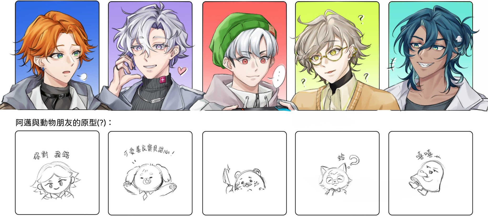
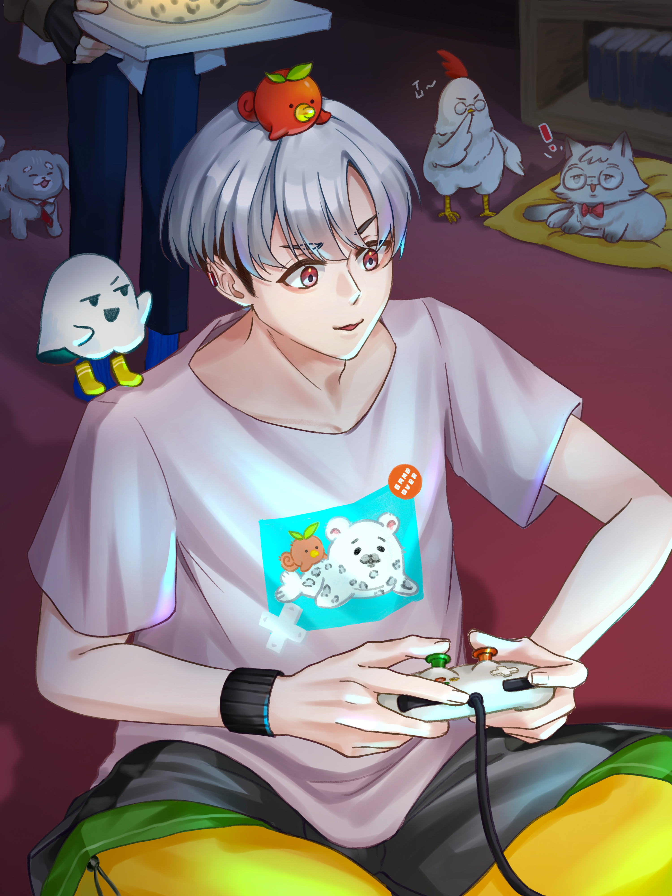

01 / DOCTOR
阿萬
消化內科醫師
在忙碌醫療日常中努力工作的醫師，喜歡與朋友做些簡單易懂的醫療衛教與遊戲實況。

此圖非頻道主人_阿萬，這是金牌遊戲主播_豹子頭01 / ABOUT THE BOX
02 / AMAN & FRIENDS
五位個性各異的夥伴，從正比頭像認識正職，再看看 Q 版的另一面。

01 / DOCTOR
消化內科醫師
在忙碌醫療日常中努力工作的醫師，喜歡與朋友做些簡單易懂的醫療衛教與遊戲實況。
02 / BEAUTY
醫美醫師
可愛善良的寶貝甜心，在醫美工作與直播日常中帶來溫柔療癒感。
03 / GAMER
家醫科醫師
白天是醫師，閒暇時投入遊戲與直播，是熱愛宅文化的金牌主播。
04 / REHAB
復健科醫師
用直率又可愛的遊戲反應陪大家同樂，偶爾也會為自己平反一下。
05 / UROLOGY
泌尿科醫師
用獨特口頭禪和自在風格炒熱直播氣氛，享受與朋友/觀眾一起歡樂的時光。
03 / WATCH TOGETHER
新直播、回放與頻道更新，前往阿萬的 YouTube 頻道看看。
直播時間與內容以 YouTube 頻道公告為準。
04 / PINK DOGGY SOUND LAB
每位成員精選一個音效，按下播放即可試聽。